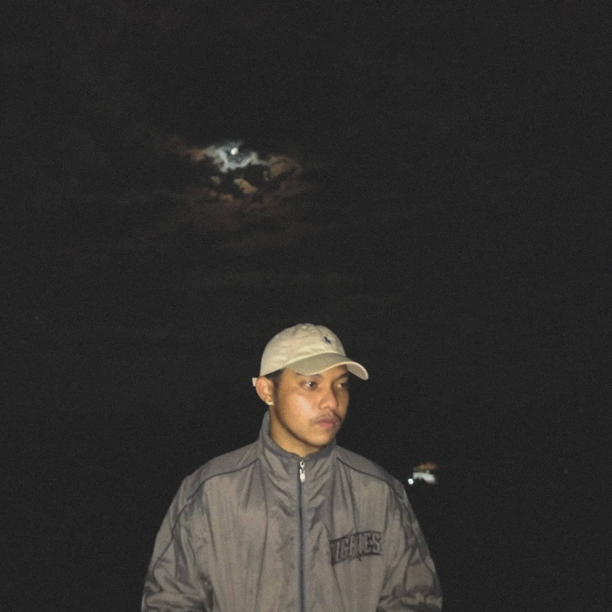

The Developer
Jose Miguel Amodia | BS Information Technology
asian college Dumaguete city
I am Jose Miguel N. Amodia, 20 years of age. I studied at Asian College as an IT student. I am immersed in the world of technology, learning coding, network management, and system administration. My enthusiasm lies in solving complex problems and embracing the ever-evolving IT domain.